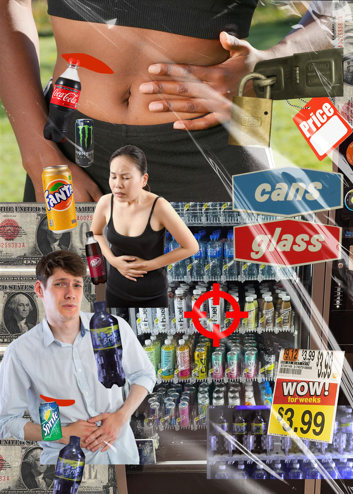
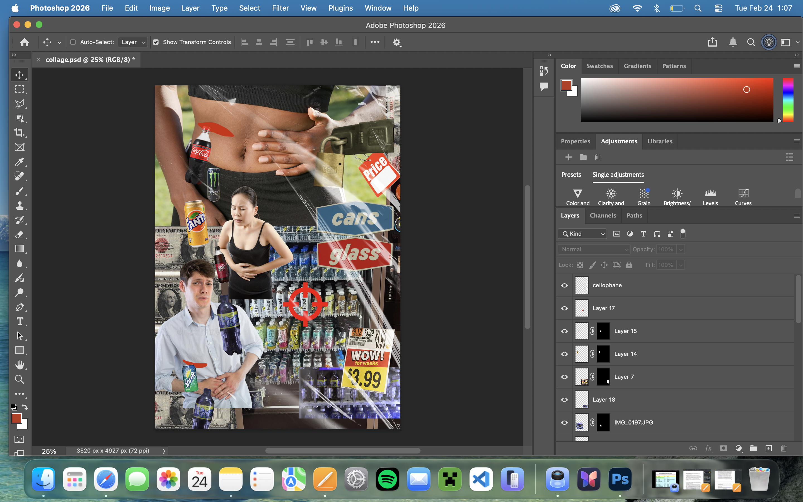
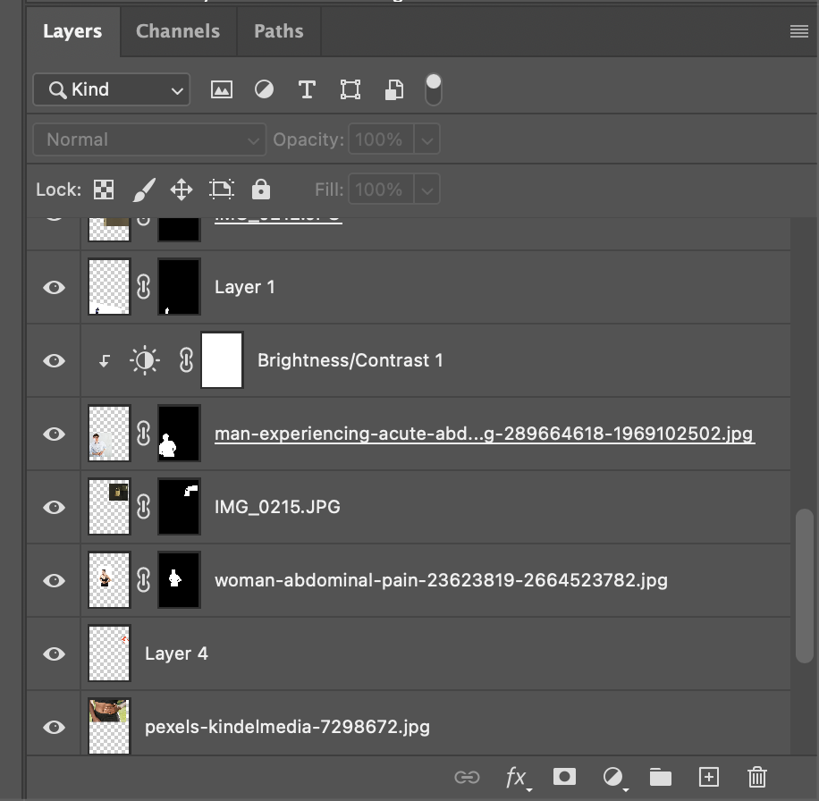

On the first day we were released from lab class with the cameras, I happened to get a photo of the vending machines. Unbeknownst to me, those vending
machines in particular were about to be removed and upgraded, with an additional vending machine full of energy drinks joining the lineup. I felt very
pessimistic about this change. No warnings about the dangers of caffeine? Just unbridled access to sugar and energy at a monetary cost to impressionable
young adults? I let this disappointment in the school funnel into my collage piece. I used segments of my other photos from around the school (padlock, recycling sign,
vending machine face) to add decoration around the more central stock image figures. I wanted my pessimism to come through, as well as the clear demands
of money as well as consequences for overindulging.
I used many, many masks to create this image. Since I was using stock photos, many came with backgrounds and I used the Photoshop "remove background" tool
to mask them out quickly. I used blending modes in clipping masks to tweak the colors of individual elements of the image as well. I originally drew the
cuts on the stomach/rib as a more orange-toned red but ended up not liking it once I added the brighter red crosshairs, so I went in and used a clipping mask
to adjust the color. I also had to bring the brightness of the recycling text up to match the colors in the rest of the piece better.

